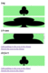
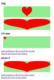
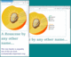
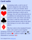
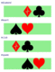
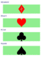
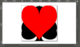

Chapter 9 A New Point of View: Cropping Embedded SVG Files
This chapter discusses ways to control the coordinate system when you embed the SVG in a web page, changing the graphic’s scale or crop, without editing the SVG file. These SVG view options allow you to override the SVG file’s viewBox or preserveAspectRatio by modifying the URL you use to access the SVG file.
There are two ways to apply views:
-
by using a target fragment (the part of the URL after the
#or hash character) to reference theidof a<view>element in the SVG file, or -
by using the SVG view fragment syntax to directly set the view information in the URL.
The chapter also covers a related technique, known as SVG stacks, which also uses URL fragments to activate different versions of the same SVG file.
These techniques only apply to embedded SVG: a separate .svg file that is included as an image or object in the HTML, or an image in the CSS.
Since we’re working with embedded SVG, we’ll also be looking a little more closely at your embedding options (<img>, <object>, and <iframe>), and how they differ now that we’re working with viewBox and scalable SVG. Unfortunately, that also includes how they differ from one browser to another.
In the course of discussing these options, we’ll also introduce nested SVG coordinate systems: <svg> inside <svg>.
Figures and Examples#
The file names link to the code view on GitHub. Beware: the linked screenshots are hi-resolution; some have very large file sizes.
View all files for this chapter on GitHub.
- Figure 9-1. A web page using SVG views, some of which can be changed dynamically
- Example 9-1. Using an SVG with multiple views in a web page
- Figure 9-2. A web page using SVG view fragments to modify an existing file
- Figure 9-3. An interactive SVG, before and after being zoomed in to a view
- Example 9-2. Using SVG links and views to create interactive zooming
- Figure 9-X1. The same web page, in browsers of different dimensions
- Example 9-X1. Using views and nested SVGs to arrange multiple icons in a single file
-
- Live HTML file, picture-media-views.html
- Original embedded SVG file, Drupe_fruit_diagram-en.svg
- PNG screenshot, picture-media-views.png
- Modified embedded SVG file,
Drupe_fruit_diagram-en-2.svg (using
<view>and:targetstyles) - Modified HTML file, picture-media-views-2.html
- From the “Picking the Perfect View” extra article
- Figure 9-4. An SVG icon sprite
- Example 9-3. Using views and nested SVGs to arrange multiple icons in a single file
-
- Live SVG file,
suits-views.svg (edit the URL to add
#diamond,#club,#spade, or#heartto see the individual views) - PNG screenshot, suits-views.png
- Live SVG file,
suits-views.svg (edit the URL to add
- Figure 9-5. A web page with many images that all come from one image file
- Example 9-4. Using an SVG view sprite within a web page
- Figure 9-6. An SVG icon sprite used in a web page, without clipping to the icon dimensions
- Example 9-5. Using an SVG view sprite, without constraining the image dimensions to the aspect ratio
- Figure 9-7. An SVG stack used in a web page
- Figure 9-8. An SVG stack, as it appears in a graphics editor
- Example 9-6. Using :target styles to stack multiple icons in a single file
-
- SVG stack file,
suits-stack.svg (nothing will display without a target fragment, use one of
#diamond,#club,#spade, or#hearton the live file) - PNG screenshot of the stack layers in Inkscape, suits-stack.png
- Live HTML file using the stack, view-suits-stack.html
- PNG screenshot of the web page, view-suits-stack.png
- SVG stack file,
suits-stack.svg (nothing will display without a target fragment, use one of
{kind=link}
{kind=link}
{kind=link}
{kind=link}
{kind=link}
{kind=link}
{kind=link}
{kind=link}
{kind=link}
{kind=link}
{kind=link}
{kind=link}
{kind=link}
{kind=link}
{kind=link}
{kind=link}
{kind=link}
{kind=link}
{kind=link}
{kind=link}
{kind=link}
{kind=link}
{kind=link}
{kind=link}
{kind=link}
{kind=link}
{kind=link}
{kind=link}
{kind=link}
{kind=link}
{kind=link}
{kind=link}
Online Extras#
- “Picking the Perfect View”: SVG views and the HTML
<picture>element are a responsive design power team, letting you crop an embedded graphic based on media queries. - Reference: SVG Elements and Attributes
- Reference: Embedding SVG in HTML